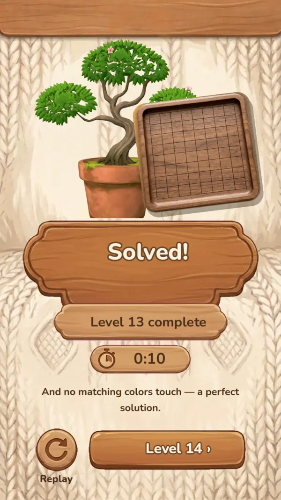

Ein Spiel von Coffee Beans Studio
Koselig
Ein gemütliches Legespiel im Holzrahmen. Lege jedes Teil in den Rahmen – und lass dir Zeit.
Bald im App Store und bei Google Play
Rätseln ohne Eile
Koselig ist ein digitales Legespiel im Holzrahmen. Die Teile liegen auf dem Tisch rund um den Rahmen: Du nimmst sie, drehst sie und legst sie ein, bis jedes Feld belegt ist.
Die Level führen dich über eine Karte – von kleinen Rahmen bis zum großen. Jeder Rahmen lässt sich auf mehr als eine Art füllen, und es gibt eine perfekte Lösung, bei der sich keine zwei gleichfarbigen Teile berühren.
Du bist nicht sicher, ob es noch eine Lösung gibt? Tippe auf Sackgasse?, und der Bonsai prüft es für dich – nach einem kurzen Video, das du dir freiwillig ansiehst, oder sofort, wenn du Werbefrei gekauft hast.


Screenshots





Was drinsteckt
Drei Tische
Eiche, Leinen und Nuss – auf jedem regt sich leise etwas: eine Kerze, Dampf über dem Tee, Lavendel im Wind.
Rahmen und Teile
Rahmen aus Kiefer, Nuss, Stein, Stahl, Messing, Olive und Kirsche. Teile in Lack, Holz, Stein, Metall und Terrazzo.
Eine Levelkarte
Sanfte erste Schritte in kleineren Rahmen, dann das ganze Rätsel.
Der Bonsai
Dein Helfer bei Sackgasse? – und er blüht auf, wenn du ein Level löst.
Spielstände
Drei Speicherplätze für Zwischenstände, zu denen du zurückkehren möchtest.
Sieben Sprachen
Deutsch, English, Español, Français, Italiano, Polski und Русский.
Fair in Sachen Werbung
Keine Banner, keine Pop-ups. Ein kurzes Video läuft nur, wenn du über Sackgasse? prüfen lassen möchtest und dich für das Video entscheidest. Dazu gibt es einen optionalen Kauf: Mit Werbefrei funktioniert die Prüfung ohne Videos.
iPhone und Android · Deutsch, English, Español, Français, Italiano, Polski, Русский